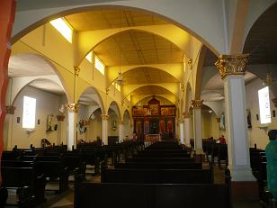

ADMINISTRACION DE TEMPLO, LA CASA CURAL Y LOS EDIFICIOS PARROQUIALES
Templo Parroquial

El Estado del Templo es bueno.
- En el 2006 se hizo la reparación del techo para quitar humedades y goteras, se colocaron vitrales en cinco de las ventanas y vidrios de colores en la parte superior, se tiene la seguridad normal en sus puertas y a nivel general. Como plan de obras se tiene el arreglo del presbiterio, siempre se ha contado con la autorización del ordinario para las obras en el Templo. El arquitecto Juan Manuel Rangel es el profesional que ha ayudado en los respectivos diseños.
- En el segundo semestre del 2005 se pintó el Templo en su totalidad.
- Otro proyecto importante será colocar escaleras metálicas adecuadas y seguras para tener acceso a la torre del Templo.
- El Sagrario cumple con los requisitos canónicos de dignidad y seguridad es inmediatamente visible.
- Se tiene altar fijo según las normas canónicas y litúrgicas es digno y funcional.
- La sede no es fija. Es digna, destacada, desde ella se destaca el ministerio del presidente de la asamblea y moderador de la oración.
- Se tiene ambón fijo y adecuado.
- No tiene el Templo pila Bautismal.
- Se tienen cuatro confesionarios que cumplen con los requisitos canónicos para la reserva del penitente. Son adecuados para oír habitualmente confesiones y se emplean como sede habitual para este sacramento. Falta hacerles alguna reparación en la madera.
- Se cuenta con 80 bancas recién reparadas en su totalidad
- También se arregló la sacristía quitando algunas divisiones de madera, pintándola y colocando vidrios de colores. Tiene el tamaño adecuado, es funcional, segura e invita al recogimiento y a la oración.
- Los Santos Oleos se conservan en la sacristía. Se renuevan cada año y se da la respectiva formación a los fieles sobre su significado.
- Se tiene el misal y los leccionarios aprobados por la conferencia Episcopal de Colombia. Son de gran ayuda las hojitas dominicales por su traducción sencilla y adecuada para el pueblo, sin embargo se proclama la palabra siempre de los leccionarios. Se tiene los rituales de los sacramentos y se les conserva en buen estado.
- Se tienen las Imágenes Sagradas necesarias para la vida de piedad y la religiosidad popular. Antes de la Semana Santa se mandaron restaurar con autorización del obispo 10 de las imágenes, al restaurador José Solarte de Aguadas Caldas. Las imágenes que están exhibidas simultáneamente en el templo son: La Santísima Trinidad, Virgen del Carmen, San Antonio, San Roque, San Isidro, San Martín, Divino Niño, Corazón de Jesús Virgen Inmaculada, Señor de los Milagros, El resucitado.
- Existen como propiedad de la parroquia: suficientes albas, cíngulos, estolas, casullas y demás ornamentos sagrados, dignos, limpios y en buen estado, como corresponde a la celebración del Ministerio Pascual. Se procura emplear habitualmente, aun en situación climática difíciles, el ornamento completo. Durante la cuaresma se hizo una campaña y la comunidad donó los ornamentos que no se tenían o estaban en regular estado.
- Se realiza el aseo general del templo dos veces por semana, en especial de manteles, corporales, purificadores. Se pone en este aspecto todo el celo que merece la atención de las cosas sagradas.
- La iluminación eléctrica es suficiente para hacer una buena lectura tanto en el altar como en el ambón.
- Se cuenta con equipo de sonido marca sound barrier, con su respectiva consola, dos micrófonos de enchufe y dos micrófonos inalámbricos. El sonido del templo fue comprado en Casa Vaca de Cali, quienes le hacen el respectivo mantenimiento desde finales del 2005. Garantiza y favorece una buena comunicación con los fieles. Se cuenta también con los parlantes de la torre recién reparados.